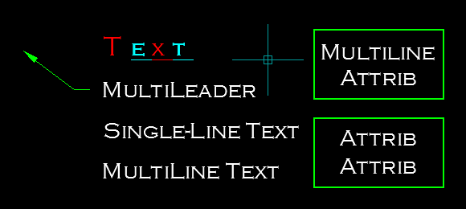
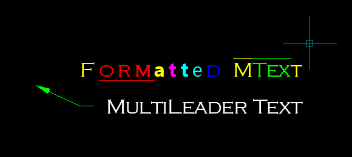

Copy or Swap Text
This page is delivered for consistency purposes only, as part of the LeeMac sample module of DynALisp, which shows how DynALisp turns existing AutoLISP programs into a module. The program and its description are the work of Lee Mac, who keeps all the credit for them. The original page, with the latest version, is on Lee Mac's website: https://lee-mac.com/copytext.html
| Function Syntax | LM-CopySwapText – original syntax: ctx (Copy Text) / stx (Swap Text) (see aliases) |
| Current Version | 1.9 |
| Compatible with AutoCAD for Mac? | No |
| Compatible with AutoCAD LT? | No |
| Original Page | lee-mac.com/copytext.html |
Program Description
This program enables a user to copy the text content from a multitude of 'source' objects to a selection of 'destination' objects, or swap the text content between two objects.
To copy text, the program may be called with ctx at the AutoCAD command line. The user may then select either a Text, MText, Attribute, Dimension, Table Cell, or Multileader object and proceed to copy the associated text content to a selection of any of the aforementioned objects.
The objects to which the text is copied may be selected individually or alternatively, upon selecting the 'Multiple' option, the user may make a selection of multiple objects to which the text string will be copied.
The program also provides functionality to allow the user to switch the text content between two objects. Upon calling the program with the stx command at the command line, the user may select two objects whose text content will be swapped.
If the 'Settings' option is selected when running the program, the user may decide whether formatting overrides present in selected source objects (e.g. formatting which has been applied through the MText Editor) are applied to selected destination objects which permit the use of such formatting.
Example of Copy Functionality (CTx)

Example of Swap Functionality (STx)

Bundled program notes
;;-----------------------=={ Copy or Swap Text }==----------------------;;
;; ;;
;; This program enables a user to either copy the text content from ;;
;; a multitude of 'source' objects to a selection of 'destination' ;;
;; objects, or swap the text content between two objects. ;;
;; ;;
;; To copy text, the program may be called with 'ctx' at the AutoCAD ;;
;; command line. The user may then select either a Text, MText, ;;
;; Attribute, Dimension or Multileader object and proceed to copy the ;;
;; associated text content to a selection of any of the aforementioned ;;
;; objects. ;;
;; ;;
;; The objects to which the text is copied may be selected ;;
;; individually or, alternatively, upon selecting the 'Multiple' ;;
;; option, the user may make a selection of multiple objects to which ;;
;; the text string will be copied. ;;
;; ;;
;; The program also provides functionality to allow the user to ;;
;; switch the text content between two objects. Upon calling the ;;
;; program with 'stx' at the command line, the user may select two ;;
;; objects whose text content will be swapped. ;;
;; ;;
;; If the user choose the 'Settings' option when running the ;;
;; program, they may alter whether formatting overrides present in ;;
;; selected source objects is applied to selected destination objects ;;
;; which permit the use of such formatting. If the user opts to remove ;;
;; the formatting, the program will remove all formatting from the ;;
;; text string prior to copying or swapping it. ;;
;; ;;
;;----------------------------------------------------------------------;;
;; Author: Lee Mac, Copyright © 2010 - www.lee-mac.com ;;
;;----------------------------------------------------------------------;;
;; Version 1.0 - 2010-12-16 ;;
;; ;;
;; - First release. ;;
;;----------------------------------------------------------------------;;
;; Version 1.1 - 2010-12-17 ;;
;; ;;
;; - Added ability to retain/remove MText formatting. Setting is ;;
;; stored as a global variable (*retain*) ;;
;;----------------------------------------------------------------------;;
;; Version 1.2 - 2010-12-20 ;;
;; ;;
;; - Entire program rewritten to include SwapText capability. ;;
;;----------------------------------------------------------------------;;
;; Version 1.3 - 2011-01-05 ;;
;; ;;
;; - Fixed minor formatting bugs. ;;
;;----------------------------------------------------------------------;;
;; Version 1.4 - 2015-02-23 ;;
;; ;;
;; - Program entirely rewritten. ;;
;;----------------------------------------------------------------------;;
;; Version 1.5 - 2016-03-19 ;;
;; ;;
;; - Program mostly rewritten to incorporate full compatibility with ;;
;; Dimensions & Multileader Block Attributes. ;;
;;----------------------------------------------------------------------;;
;; Version 1.6 - 2016-03-21 ;;
;; ;;
;; - Fixed bug which reported that an MLeader with Attributed Block ;;
;; content had 'no editable content' if an Attribute Definition ;;
;; was not the last component found within the Block Definition of ;;
;; the attributed block used by the MLeader. ;;
;; - Fixed bug causing the program to crash when detecting name of ;;
;; Block Container for Dimension entities. ;;
;;----------------------------------------------------------------------;;
;; Version 1.7 - 2017-04-12 ;;
;; ;;
;; - Fixed a bug which resulted in an incorrect output when processing ;;
;; MText whose text content occupied multiple DXF group 3 entries. ;;
;;----------------------------------------------------------------------;;
;; Version 1.8 - 2020-03-07 ;;
;; ;;
;; - Program modified to incorporate support for table cell content. ;;
;;----------------------------------------------------------------------;;
Command Names And Aliases
As in every DynALisp module, each program of this sample module has one main command, named LM-*, and the original command names of Lee Mac's page are kept as its aliases: they run the same command, and can be added, renamed or removed in Dyl-Suite (saved in Resources\Aliases.csv). The rows marked ↳ are child commands of LM-CopySwapText: they are run by their alias, or picked from LM-CopySwapText when it lists them (their command is named Pst-*).
| Command | Aliases | Name |
|---|---|---|
| LM-CopySwapText | – | Copy / Swap Text |
| ↳ CTX | – | Copy Text |
| ↳ STX | – | Swap Text |